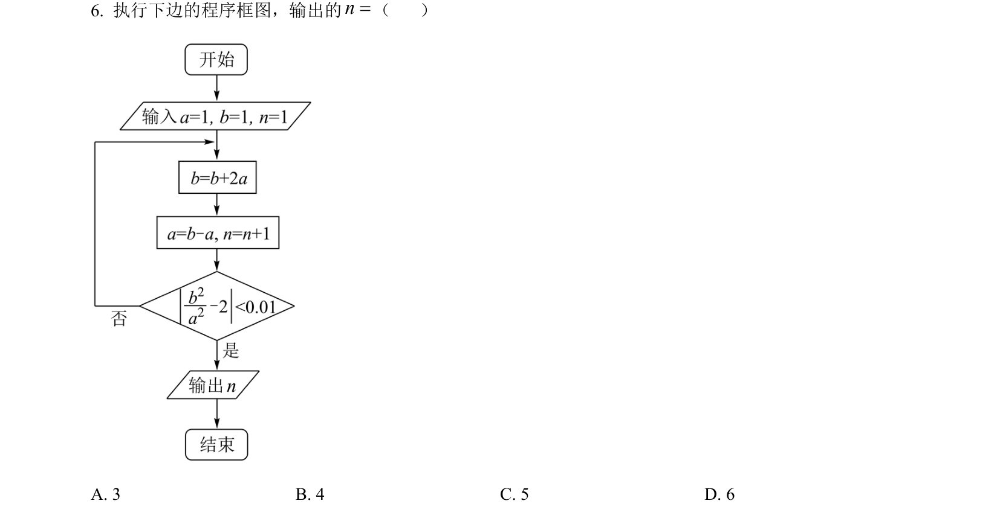
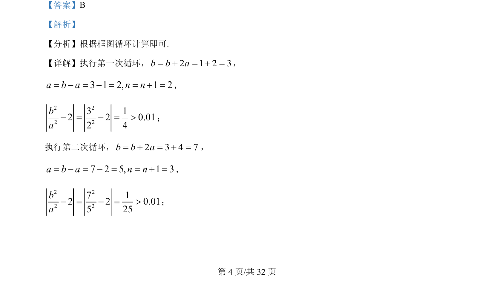
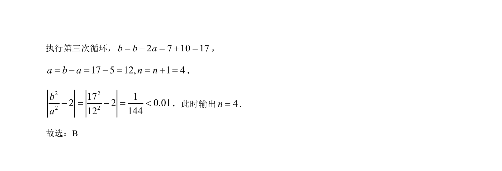

考点：程序框图 循环结构 条件判断

该题考查程序框图中循环结构的执行与条件判断，通过模拟计算输出循环次数。


📄 原 PDF 第 4 页：
素材/真题/吉林/2008-2024·（吉林）数学高考真题/2022年高考数学试卷（理）（全国乙卷）（解析卷）.pdf
【答案】B 【解析】 【分析】根据框图循环计算即可. 【详解】执行第一次循环，2 1 2 3b b a= + = + =， 3 1 2, 1 2a b a n n= - = - = = + =， 2 22 23 12 2 0.012 4ba- = - = >； 执行第二次循环，2 3 4 7b b a= + = + =， 7 2 5, 1 3a b a n n= - = - = = + =， 2 22 27 12 2 0.015 25ba- = - = >；